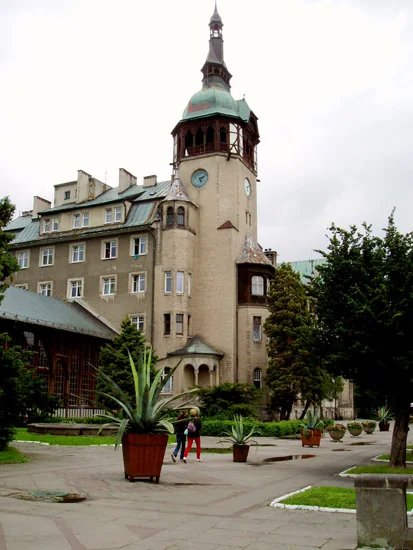

Lato
Szlaki rowerowe i turystyczne w Górach Izerskich, lasy pełne grzybów i jagód, a do tego uzdrowiskowe kąpiele borowinowe i wody mineralne. We wrześniu słychać rykowisko jeleni, czasem nawet w domu.
Dom w górach
ul. Kilińskiego 4
59-850 Świeradów-Zdrój
Świeradów-Zdrój wraz z Czerniawą to uzdrowisko znane z kąpieli borowinowych i wód radoczynnych, a zarazem dobre miejsce na wypoczynek latem i zimą.
Odległości orientacyjne, w linii prostej.

Blisko jest także do Czech: do Pragi, Skalnego Miasta, aquaparku i kina 3D w Libercu oraz zamku we Frydlancie.
Szlaki rowerowe i turystyczne w Górach Izerskich, lasy pełne grzybów i jagód, a do tego uzdrowiskowe kąpiele borowinowe i wody mineralne. We wrześniu słychać rykowisko jeleni, czasem nawet w domu.
Trasy zjazdowe z koleją gondolową oraz trasy biegowe na miejscu i w niedalekich Jakuszycach.
Prosimy o podanie terminu i liczby osób. Odpowiemy, czy dom jest wolny, i podamy cenę.